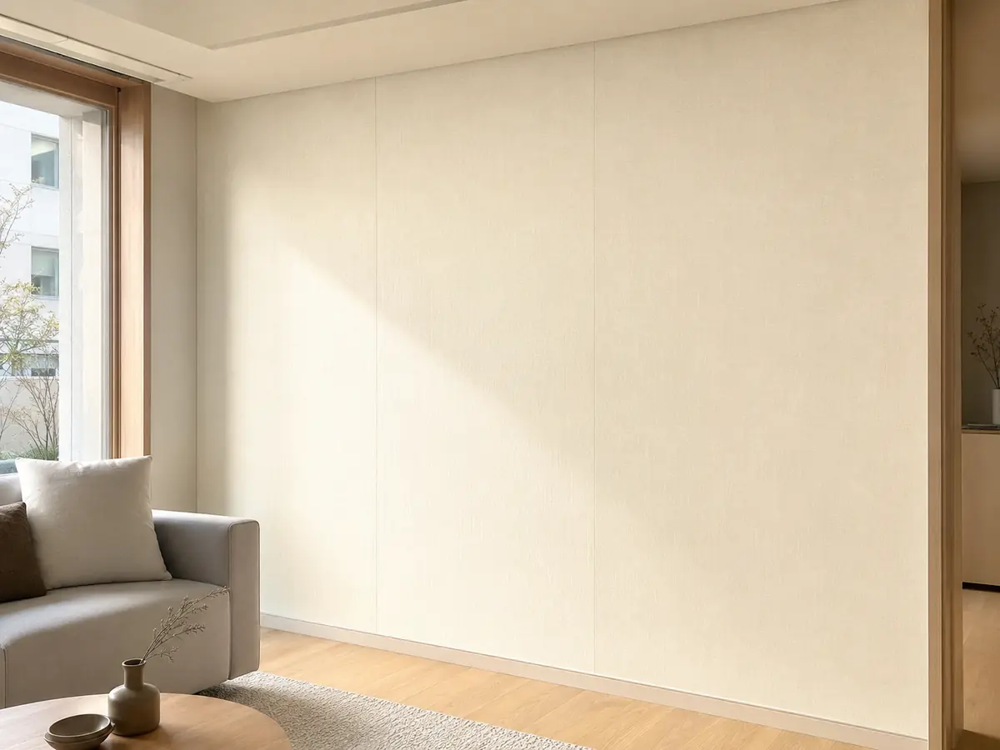
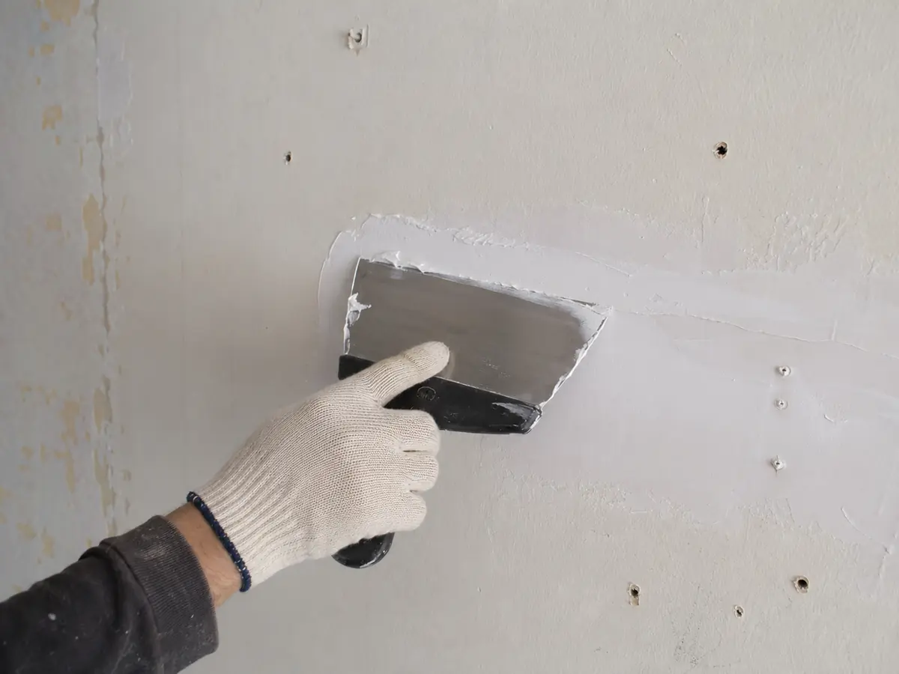

벽지 가이드
벽지는 가장 넓은 면적을 한 번에 바꾸는 마감입니다. 실크·합지·뮤럴 벽지와 수성 도장을 내구성·통기성·청소·가격으로 비교하고, 시공 품질을 좌우하는 퍼티·초배까지 정리했습니다.
이 글에서 알 수 있는 내용
- 실크·합지·뮤럴 벽지와 수성 도장의 결정적 차이
- 평당 단가 범위와 견적에서 확인할 항목
- 마감 품질의 70%를 좌우하는 퍼티·초배·시공 순서
- 들뜸·곰팡이·이음 벌어짐 등 하자와 재시공 기준
- 친환경 인증(HB마크)과 브랜드별 특징을 보는 관점
오래 살 집이면 실크, 예산·통기성·임대가 우선이면 합지가 무난합니다. 가격 차이는 평당 1~2만원이지만 내구성 차이는 5년 이상 나며, 마감 품질은 벽지 종류보다 퍼티·초배 시공에서 갈립니다.
벽지 종류 한눈에
실크·합지는 재질과 이음 방식이 다르고, 뮤럴은 맞춤 출력, 도장은 벽지가 아닌 페인트 마감입니다. 성격을 먼저 구분하세요.
내오염·표준
통기성·예산
디자인 강조
매끈한 벽면
실물 예시로 보는 차이
사진은 준비되는 대로 아래 카드에 자동으로 표시됩니다. 지금은 임시 placeholder가 보입니다.


평당 단가·시공 순서
단가는 자재 등급·평수·층고에 따라 ±20% 변동합니다. 그리고 마감 품질의 70%는 벽지 이전의 ‘퍼티·평탄작업’에서 결정됩니다.
서울 기준 2026.05. 시장 관행 기반 참고치.
| 구분 | 자재만 | 자재 + 시공 | 비고 |
|---|---|---|---|
| 합지 (일반) | 1.5~2.5만원/평 | 3~4만원/평 | 면적 작을수록 단가↑ |
| 실크 (일반) | 3~4만원/평 | 5~6만원/평 | 가장 대중적 |
| 실크 (고급지) | 5~8만원/평 | 7~12만원/평 | 두께·질감이 다른 상위 라인 |
| 뮤럴 | 10~25만원/㎡ | +시공비 별도 | 디자인 라이선스 별도 |
← 표는 좌우로 넘겨 볼 수 있어요

시공 순서
- 퍼티·평탄작업 — 기존 벽지 제거 후 결함 메움
- 프라이머 도포 — 풀 흡수·곰팡이 방지
- 풀칠·재단 — 풀 농도·먹임 시간이 마감 차이
- 도배 — 맞댐(실크) 또는 겹침(합지)
- 건조 24~48시간 — 습하면 곰팡이·들뜸
25평 기준 1~2일. 퍼티가 많은 노후 주택은 +1일.
선택하는 방법
거주 기간·공간 성격·청소 습관을 대입해 실크와 합지 사이에서 결정하세요.
실크가 잘 맞는 경우
- 오래 살 집이라 내구성이 중요하다
- 주방·거실 등 손·오염이 닿는 벽이다
- 이음선 없는 깔끔한 마감을 원한다
합지·도장이 잘 맞는 경우
- 임대·매도 전 밝고 무난한 마감이 목적이다
- 통기성(친환경 종이)을 중시한다
- 도장: 이음선 없는 매끈한 벽을 원한다
구매 전 확인할 스펙
벽지 이름만으로는 비교가 안 됩니다. 초배 포함 여부와 친환경 등급이 견적서에 있어야 합니다.
| 항목 | 기준 | 보는 법 |
|---|---|---|
| 종류 | 합지(소폭/광폭) / 실크(PVC) | 실크는 오염에 강하고 이음매 적음 · 합지는 통기성·가격 우위 |
| 도배 방식 | 초배(부직포·아이텍스) 포함 여부 | 벽 상태 나쁘면 초배 생략 시 요철·이음매 드러남 |
| 친환경 인증 | HB마크(최우수~우수) | 실크벽지는 PVC 코팅 — 아이 방은 등급 확인 |
| 수량 산정 | 평수 × 롤 수 기준 | 천장 포함 여부·아트월 별도 여부를 견적에 명시 |
| 부자재 | 풀(전분)·본드 등급 | 곰팡이 이력 세대는 방균 풀 사용 여부 확인 |
← 표는 좌우로 넘겨 볼 수 있어요
계약·하자 대응
입주 1년 내 발생한 들뜸·곰팡이·이음 벌어짐은 시공 하자로 봅니다. 계약서에 시공 범위와 보증을 명시하세요.
브랜드별 특징 (중립 정리)
우열을 매기지 않고 각 브랜드의 강점과 검토 포인트만 정리했습니다. 벽지는 브랜드 차이보다 도배 시공(초배·이음매) 품질이 체감을 더 좌우합니다.
| 브랜드 | 주요 강점·제품군 | 검토 시 살펴볼 점 |
|---|---|---|
| LX하우시스 지인벽지 | 패턴·컬러 라인업이 넓고 쇼룸·앱 시뮬레이션 제공 | 시리즈별 등급·품번 확인 |
| 개나리벽지 | 실크·합지 라인업 · 무난한 베이스 톤 | 실크/합지 라인 구분과 초배 포함 확인 |
| 신한벽지 | 디자인 다양 · 실크 라인 보유 | 품번·로트(생산회차) 동일 확보 |
| 서울·제일벽지 등 | 합지 라인업 폭넓음 | 초배·이음매 처리 시공 조건 확인 |
시공팀 경력과 초배 포함 여부를 먼저 확인하세요.
최종 선택 체크리스트
자주 묻는 질문
실크와 합지, 오래 살면 뭐가 나은가요?
오래 거주한다면 실크가 유리합니다. 물걸레 청소가 가능하고 내구성이 5~7년인 합지보다 10~15년으로 깁니다. 반면 임대·단기 거주나 통기성이 중요하면 합지가 합리적입니다.
도배가 곰팡이가 생겼는데 하자인가요?
곰팡이는 대개 결로나 누수가 원인입니다. 입주 1년 내 시공 불량(건조·환기 부족)에 의한 것이면 재시공 사유지만, 단열·환기 문제라면 원인부터 함께 잡아야 재발을 막습니다.
같은 벽지인데 벽마다 색이 달라 보여요.
같은 품번이라도 생산회차(로트)가 다르면 색감 차이가 납니다. 그래서 한 번에 충분량을 같은 로트로 발주하는 것이 원칙입니다.
벽지 대신 도장이 더 나을까요?
도장은 이음선이 없고 부분 보수가 쉽지만, 벽면 결함이 그대로 드러나 퍼티·평탄작업이 더 중요합니다. 벽 상태가 좋고 매끈한 마감을 원하면 도장, 결함이 많으면 벽지가 유리할 수 있습니다.
출처
- 한국벽지공업협회 · LX하우시스·신한벽지 시공 매뉴얼
- 한국소비자원 인테리어 분쟁 사례집
- 실내공기질 관리법 시행규칙 (TVOC·포름알데히드)